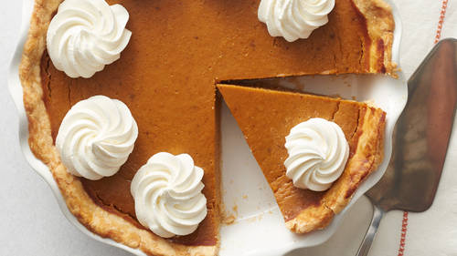

Pumpkin Pie

Description
Pumpkin is a sweet treat that is made usually during Thankgiving. It is an American Favorite!
Ingredients
- 1 ⅓ cups all-purpose flour
- 1 tablespoon granulated sugar
- ½ teaspoon salt
- ½ cup shortening
- 3 ½ tablespoons cold water <;li>
- 2 cups mashed, cooked pumpkin, or about 1 1/2 pounds skin-on, raw pumpkin
- 1 (12 fluid ounce) can evaporated milk
- 2 eggs, beaten
- ¾ cup packed brown sugar
- ½ teaspoon ground cinnamon
- ½ teaspoon ground ginger
Steps
- Preheat oven to 425 degrees F. Whisk pumpkin, sweetened condensed milk, eggs, spices and salt in medium bowl until smooth. Pour into crust. Bake 15 minutes.
- Reduce oven temperature to 350 degrees F and continue baking 35 to 40 minutes or until knife inserted 1 inch from crust comes out clean. Cool. Garnish as desired. Store leftovers covered in refrigerator.